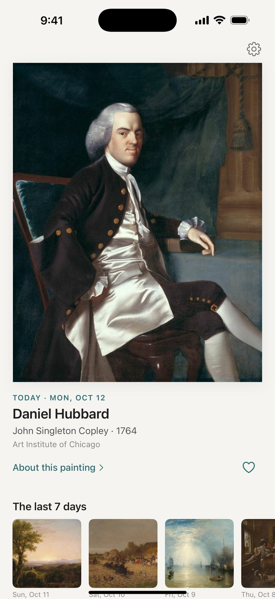

梵高、维米尔、伦勃朗。一个在午夜更换画作的小组件，让你每次拿起手机，主屏幕都像一次小小的美术馆之旅。
下面介绍如何用 Museday来设置。显示今天画作的小尺寸小组件是免费的。
安装并打开 Museday。今天的画作就在第一个界面，附有标题、画家、年份和收藏它的美术馆。轻点 关于这幅画 即可阅读美术馆亲自撰写的作品介绍。

这样就完成了。每天午夜，新的画作会替换上来。App 内置 290 位画家的 511 幅画，所以不联网也会继续更换。
图中的两个小组件是大尺寸和中尺寸，属于 Museday Pro。免费的小组件是小尺寸，画作铺满整个方形。
按住锁定屏幕，轻点 自定，轻点小组件区域，然后添加 Museday 的 今日画作（标题） 小组件。它会显示今天画作的标题和画家。锁定屏幕小组件是免费的。
Museday Pro 为一次性买断，不是订阅：
没有订阅、没有广告、无需账户。· 关于 Museday
English · 日本語 · 简体中文 · 繁體中文 · 한국어 · Deutsch · Français · Español · Italiano · Nederlands · Polski · Português · Русский · ไทย · Türkçe · Українська · Tiếng Việt · Bahasa Indonesia